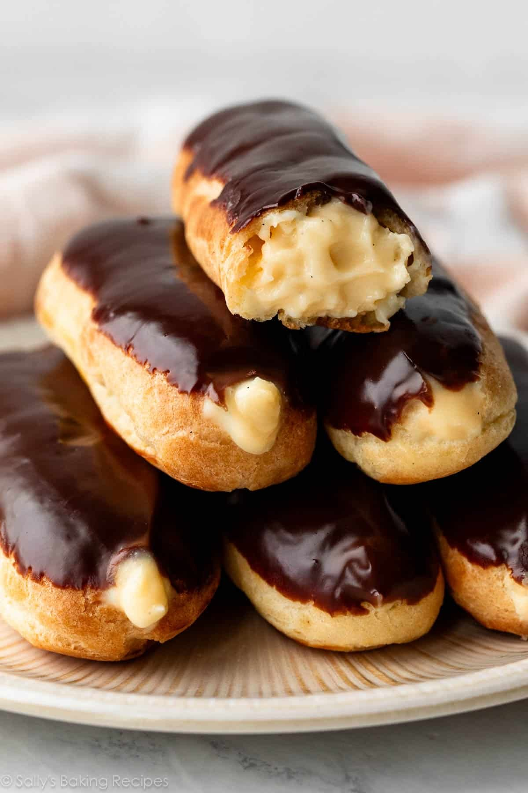

About Us
At The Art of Dessert, we are passionate about creating delicious, unique, and beautiful desserts. Our mission is to inspire bakers of all levels with easy-to-follow recipes.
Scroll down to begin your dessert journey and discover the joy of baking!
Featured Dessert Recipes
Pillowy Profiteroles
Delightful French pastry filled with cream and topped with chocolate.

Elegant Eclairs
Deliciously crisp and puffy, filled with chocolate or vanilla pastry cream.
Tempting Treacle Tart
A comforting classic British dessert with crumbly pastry and rich treacle filling.
Baking Tips
- Measure ingredients accurately: Use a kitchen scale for precise measurements, especially for baking.
- Room temperature ingredients: Ensure butter, eggs, and dairy are at room temperature for better mixing.
- Preheat your oven: Always preheat your oven to the correct temperature before baking to ensure even cooking.
- Use quality ingredients: High-quality ingredients can make a significant difference in flavor and texture.
- Don’t overmix: When mixing batter, stop as soon as the ingredients are combined to avoid tough baked goods.
What Our Bakers Say
"The recipes are easy to follow and always turn out delicious! I love baking from this site!"
"Every dessert I've made has been a hit with my family. Thank you for the wonderful recipes!"